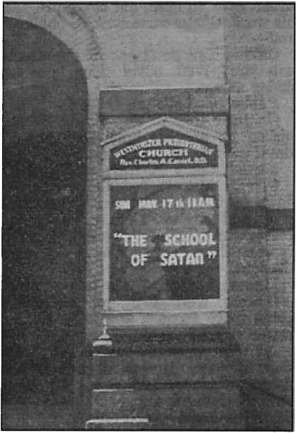

With Protestantism dead, the Jews are up against Hierarchy’s intolerance
Who will negotiate what the saviors shall have ?
Which Is the True Church?
Castor Oil Outrage Rebuked
Deputy sheriff fined $1,000 and gets one year in jail. Police chief fined $250
Five Cents a Copy One Dollar a Year
$1.25 In Canada and Foreign Countries
Published Every Other Wednesday
Contents
Jews and the Inter-Faith Hoax (Part 1)
‘He That Hath Ears, Let Him Hear!’ 5
Standard Oil and the Rubber Patents
“Thy Word Is Truth”
Sweet Reflections at Canning-Time
The New Government
Witnessing in a West Virginia City
Presenting “This Gospel of the Kingdom”
Friendly and Unfriendly Questions
British Comment
Canadian Priest Describes the Big Plan
Industries Stimulated by the War
Published every other Wednesday by
WATCHTOWER BIBLE AND TRACT SOCIETY, INC.
117 Adams St., Brooklyn, N. Y., U. S. A.
Editor Clayton J. Woodworth
Business Manager Nathan H. Knorr
Five Cents a Copy
$1 a year in the United States fl.25 to Canada and all other countries
NOTICE TO SUBSCRIBERS
Remittances: For your own safety, remit by postal or express money order. When coin or currency is lost in the ordinary mails, there is no redress. Remittances from countries other than those named below may be made to the Brooklyn office, but only by International postal money order.
Receipt of a new or renewal subscription will be acknowledged only when requested. Notice of Expiration is sent with the journal one month before subscription expires. Please renew promptly to avoid loss of copies. Send change of address direct to us rather than to the post office. Your request should reach us at least two weeks before the date of issue with which it is to take effect. Send your old as well as the new address. Copies will not be forwarded by the post office to your new address unless extra postage is provided by you.
Published also in Greek, Portuguese, Spanish, and Ukrainian.
OFFICES FOR OTHER COUNTRIES
England 34 Craven Terrace, London, W.2
Australia 7 Beresford Road, Strathfield, N.S.W. South Africa 623 Boston House, Cape Town
Mexico Calzada de Melchor Ocampo 71. Mexico, D.F. Brazil Caixa Postal 1319, Rio de Janeiro
Argentina Calle Honduras 5646-48, Buenos Aires Entered as second-class matter at Brooklyn, N. Y., under the Act of March 3, 1879.
‘Hail, the Gang’s All Here!’
♦ Much is seen in the public press concerning the “Inter-Faith” movement. This is the banding together of Catholic, Protestant and Jew for the ostensible purpose of promoting unity and goodwill. Doctrinally, they have nothing in common.
The Washington Herald, April 2,1942, carries an account which is an example of their union to attain that which would be of benefit to each of the rackets. It said:
Washington’s Catholic, Jewish and Protestant leaders yesterday sought permission of the Board of Education to inaugurate next term an experimental program of weekday religious training periods within the local public school system. . . .
Appearing in support of the program at yesterday’s meeting of the Board of Education were Msgr. Lawrence J. Shehan, of St. Patrick’s Catholic Church, and the Rev. J. Herbert Garner, of the Sixth Presbyterian Church. Representing members of the Jewish faith on the joint committee is Rabbi Morton Fierman. . . .
Under the committee’s proposal, weekday religious training classes would be established in the specified grades of schools, both colored and white. The classes would be held during “released time” granted the students for this purpose from their regular sessions.
Religion is the binding tie that holds together the Devil’s organization. This ‘untempered mortar’ is rapidly losing favor with honest people as they see it exposed by Jehovah’s “strange work”, and the religious clergy associate themselves together for mutual protection by means of “Inter-Faith”. These three, each of which damns the other two in their creeds, take counsel together in opposing The Theocracy. It is one of the Devil’s schemes to unite his camp in solid front against Jehovah’s organization; but it will be in vain.—Isaiah 8: 9,10.
“And in His name shall the nations hope.”—Matthew 12:21, A.R.V.
Volume XXIII Brooklyn, N. Y., Wednesday, August 5, 1942 Number 597
Jews and the Inter'Faith Hoax
{In Two Parts—Part 1)
ONE “trinity” is not enough. Religionists must have another. So they have formed the Inter-Faith movement. Catholic, Protestant and Jew, these three are one. This, like the doctrine of the “trinity”, is a mystery. To anyone who is at all acquainted with the history of these three religions, the incongruity of their association together in this modern clique is appalling. What do they have in common? What benefits do they expect to derive therefrom? Why does each one participate in this newly created “trinity” ?
The Jews do not believe in Christ Jesus; and they admit it. Catholics and Protestants claim such belief, but by their course of action they deny it. Each one believes the other two are outside God’s favor by virtue of their religious dogmas. Hence they are not all God’s children and the association is not one of spiritual brethren. Neither do they debate such differences or discuss them for mutual enlightenment, since they all have such tender susceptibilities. So the tie cannot be for spiritual reasons. They do, however, have the same father, the Devil; but this fact they do not appreciate or they refuse to admit. They are, indeed, strange bedfellows.
Dead Protestantism
Protestantism, as such, is dead. A few individuals may continue to cry out against the blasphemies indulged in by the Hierarchy, but they are as a voice in the wilderness. The original Protestant “lion” no longer roars out against the iniquities of Rome; it has succumbed to the subtle intrigues of the Vatican; its teeth have been pulled. As an organization, Protestantism is dead, and therefore might just as well return to the mother fold through the Inter-Faith snare as any other.
But what about the Jews? Do they align themselves in such relationship because of their tolerance? Is it the common love of tolerance that inexorably draws together the Jews and the Roman Catholic Hierarchy? Certainly not; for the Hierarchy is admittedly the most intolerant of organizations. Let their own spokesman testify on this point, that the usual charges of misrepresentation may collapse at the outset.
Catholic Intolerance
Archbishop Hughes, first archbishop of New York, gave the true attitude of the Hierarchy on tolerance when he said:
No man has the right to choose his own religion. Catholicism is the most intolerant of creeds. It is intolerance itself. We might as well rationally maintain that two and two do not make four [or three ones do not make three], as the theory of religious liberty. Its impiety is only equalled by its absurdity. [In the New York Freeman’s Journal, January 16, 1852, his official newspaper at that time.]
Note the irony of this appearing in a “freeman’s” journal!
Further testimony is submitted from the Jesuit weekly, America, issue of April 27,1940, where it makes the following statement:
The most unreasonable of all attitudes toward the Papacy is that of neutrality. The Pope is either the supreme head of Christendom, the infallible teacher of spiritual truth, the successor of St. Peter and the Vicar of Christ on earth, or he is an impostor with whom no respectable person should have dealings. You can no more be nehtral toward the Pope than you can be neutral toward Christ, although many persons who call themselves Christians are attempting this neutrality, with disastrous consequences to the Christianity that they profess. ‘He that is not with me is against me’ is as true of Christ’s vicegerent as it is of Christ Himself.
Now, neither the Jews nor the Protestants believe that the pope is “the infallible teacher of spiritual truth”, since their doctrines so widely differ. Hence, according to the above, they must necessarily believe the only alternative, that “he is an impostor with whom no respectable person should have dealings”. (In this Consolation heartily concurs.) Still they hobnob together.
“Willing Hands”
A typical example of this is the dinner given November 27, 1941, in New York, at the Waldorf Astoria, in honor of Bishop Molloy, of Brooklyn, by “a group of Catholic, Protestant and Jewish leaders”. A record of the proceedings on that occasion is contained in a brochure entitled “Willing Hands”. It has in the front an etching reproduced from the Brooklyn Eagle showing three hands, labeled “Catholic”, “Protestant,” and “Jew”, holding aloft on a staff a banner bearing the words, “Inter-Faith. Good Will.” In harmony with the physical facts, the Catholic hand is on the top of the pile, the Jew is on the bottom, the deceased Protestant is buried in between. Apparently all concerned are “willing” to have it so.
Mr. Louis M. Rabinowitz, the host, sounded the policy followed by all the other speakers, except the Catholic, when he said, “We here in America, regardless of our differences, whether they be economic or political, are all united.” These three organizations are most incompatible in their religious beliefs, yet the only differences mentioned were economic and political. This caution and high regard for the delicate religious susceptibilities of one another was followed throughout the evening, except by the guest of honor, who, taking advantage of his being the fair-haired lad on this occasion, did a little campaigning for the pope. On closer scrutiny, however, economic and political differences might well embrace the religious, since their religions are devoted to accumulating money and the organization used as a political force.
A Slip
Monsignor John L. Belford, after wading through countless platitudes, finally said something: “There is nothing narrow.about religion.” This is true; for “broad is the way that leadeth to destruction”. The converse is likewise true; for Jesus also said that ‘narrow is the way that leadeth unto life’.—Matt. 7:13,14.
Chairman Steinbrink rose and said insipidly (on page 19), ‘We have entered God’s garden and picked one of his brightest flowers, Rabbi Jonah B. Wise.” This ‘bright flower’ said he wasn’t prepared and didn’t know what he was going to say. He did make one statement which he might have enlarged upon. He said: “There is no room in America for those things which have been dominant and growing on the soil of Europe which have poisoned the relationship of man to man, and have befouled its politics and destroyed its hope.” He might have identified this ‘befouling influence’. He didn’t, however, and soon withered.
Dr. Frank Kingdon was introduced in course of time as “an outstanding representative of the Protestant faith”, and his words very aptly depicted its decay. He said:
I happen to be a Protestant. And yet, without attempting to put on any of the airs of the actor, I want to say to you that I have sometimes sat down in the quiet of my own room and tried to understand what must be passing through the mind and heart of the Holy-Father during these days. There he sits, in the Vatican, that has been hallowed by men of great understanding and great import across the centuries. He cannot sit there, wearing the Triple Crown, without realizing the historic importance of his position. I think I know how his heart must be wrung [he should: the papers harp on it enough] by the events that are taking place in the world, and I think I know where, if he could speak as you and I can speak, he might throw the weight of his influence. But he is there, not simply as a man but also in a unique sense, as the head of Christendom, and when he speaks, he must try with all the concentration in his power to make his words the very echo of the Master whom he serves [the god of this world].
Another Slip
After this typical “Protestant” display of complete capitulation and subservience to Rome and the one he calls the “head of Christendom”, Dr. Kingdon, like Mgr. Belford, let the cat out of the bag. He aptly differentiates between this Inter-Faith muddle and Christians when he says: “There are times when I am neither Protestant, nor Catholic, nor Jew, but a believer in God." He should not be a “double-minded man ... unstable in all his ways”, nor a 25-percent Christian.
After the various speakers had waded through a seemingly endless stream of eulogies concerning the bishop (he was highly esteemed by all. What did Jesus say regarding such?—Luke 16:15), each stepping gingerly to avoid tender toes, very considerate of each other’s blasphemies, very inconsiderate of the dishonor thereby heaped on Jehovah’s name, the guest of honor, Bishop Molloy, was presented. As previously stated, he was rather careless of the susceptibilities of the other two “willing hands”, and put in a rather powerful plug for the pope as being Christ’s right-hand man on the earth. With this to think about, the ‘mutual admiration society’ disbanded for the evening.
To all outward appearances, such Inter-Faith movement may seem a good thing to promote unity and tolerance in a time of dire distress and intolerance throughout the world. But does it do this? Most of the attention is here given to the Jews and Catholics, for two reasons. First, and as previously stated, Protestantism is dead and therefore of little weight. Second, because anti-Semitism is such a live issue today and the Hierarchy is inextricably involved therein. It will be noted that in all Inter-Faith functions, as in the one just referred to, the Catholic dominates and the Protestant and Jew play the role of yes-men, void of spiritual integrity, and apparently desirous of “peace at any price”. The only time the Hierarchy even pretends tolerance or condescends to any interfaith arrangement is where she is not strong enough to do otherwise. Her policy is still ‘death to heretics’.
‘He That Hath Ears, Let Him Hear!’
To be tolerant one does not have to fraternize with those who have shown themselves mortal enemies throughout the centuries. The Jews, particularly the leaders who have joined and the people who have endorsed this Inter-Faith subterfuge, should refresh their minds regarding the Hierarchy’s unchangeable policy concerning them. Let the popes of past centuries speak; let their canon law speak; let their actions as recorded in history speak! All these have much to say, if the people choose to listen. And the times have not changed. As these facts are recounted, note the modern-day parallels. They are not mere coincidences, but history repeating itself!
L. H. Lehmann, in an article published in The Converted Catholic, issue January, 1941, cites some of the decrees of the popes concerning Jews. The following is quoted from that article:
Pope Innocent III decreed as follows: “As Cain was a wanderer and an outcast, not to be killed by anyone but marked with a sign of fear on his forehead, so the Jews . . . against whom the voice of the blood of Christ cries out . . . although they are not to be killed, they must always be dispersed as wanderers upon the face of the earth. . . . They are admitted to our familiarity only through our mercy; but they are to us as dangerous as the insect in the apple, as the serpent in the breast . . . Since, therefore, they have already begun to gnaw like the rat, and to sting like the serpent, it is to our shame that the fire in our breast which is being eaten into by them, does not consume them ... As they are reprobate slaves of the Lord, in whose death they evilly conspired (at least by the effect of the deed), let them acknowledge themselves as slaves of those whom the death of Christ has made free.”
Under this same Pope Innocent III, the Fourth Lateran Council, in 1215, which was one of the most important ecumenical councils of the Catholic church, officially decreed Canons Nos. 67-70 setting forth the Roman Catholic attitude towards the Jews: The first of these Canons is financial, containing protective measures for Christians against the rapacity of Jews as usurers. The second decrees that all Jews be distinguished for all time from Christians by color of dress and distinctive badge. The third forbids Jews to have Christians as nurses, tutors and domestic servants, and forbids Christians to cohabit with Jews and Jewesses. Legal marriage with them was impossible. The fourth forbids the acceptance of legal testimony of Jews against Christians, and orders preference for the testimony of a Christian against a Jew.
A few years later, Pope Innocent III reiterated and confirmed these edicts of the Lateran Council as follows: “'. . . the same Council laid down that the testimony of Christians against Jews is to be admitted, even when the former use Jewish witnesses against Christians, and decreed that, in a case of this kind, anyone who would prefer Jews before Christians is to be condemned as anathema, yet up to the present time things are so carried on in the Kingdom of France that the testimony of Christians against Jews is not believed, whereas Jews are admitted as witnesses against Christians. And at times, when they to whom Jews have loaned money with usury produce Christian witnesses about the fact of payment, the deed which the Christian debtor through negligence indiscreetly left with them is believed rather than the witnesses whom they bring forward.”
Pope Pius IV permitted Jews to possess immovable property up to the value of 1,500 gold ducats. His successor, Pius V, however, in 1567, revoked this small concession, and ordered Jews to sell all their properties to Christians. Two years later, in modern Hitler-esque manner, he ordered all Jews expelled from the States of the Church: “By authority of these present letters, We order that each and every Jew of both sexes in Our Temporal Dominions, and in all the cities, lands, places and baronies subject to them, shall depart completely out of the confines thereof within the space of three months after these letters shall have been made public.”
Other papal decrees could be cited, but this is sufficient to establish the point. It is true that a few popes made feeble attempts to curb extreme measures; but never did they take vigorous action to effectively remedy the disgraceful condition.
The Sword of the Church
Note, if you please, the similarity between these edicts and the laws enacted by the pope’s winning champion, Adolf Hitler, restricting the activities of the Jews to certain types of work, confining them to the squalid limits of the ghetto, or outright expulsion from the country altogether. Whole populations have been moved, massacred, driven throughout the earth, or thrown into concentration camps.
At the time of the Spanish Inquisition many Jews fled to Holland, Denmark and Norway. Now their descendants there have been overtaken by the revived Inquisition under the new Catholic Inquisitor General, Adolf Hitler! Hitler is a Catholic; the pope refuses to excommunicate him despite numerous requests by different groups that he do so. He would not lay aside this bloody “sword of the church” at this time.
The pope has always sided in with the Axis powers. Mussolini’s campaign in Ethiopia, Japan’s war against China, butcher Franco’s rebellion in Spain (ably assisted by Mussolini and Hitler), all were “blessed” by the “Holy Father”. Hitler’s putsch into Austria was welcomed by Cardinal Innitzer, and the priest Tiso played his part in Czechoslovakia for the gangsters. Now the pope’s 'small boy’ in France, the “good Marshal Petain”, takes his proper cues and supports Hitler’s war against Russia, calling it a “crusade”. The “fifth column” role of priests in the Philippines was recently exposed in Consolation, and now the Vatican announces the establishment of diplomatic relations with the third Axis partner, treacherous Japan!
As these totalitarian papal-blessed powers overrun one country after another they bring in their wake a revival of the Inquisition, with the aforementioned treatment of the Jews that characterized that dark period. Note, for example, the conditions now obtaining in France relative to the Jews. The Converted Catholic, March, 1942, under the heading “France Revives Papal Anti-Semitic Decrees”, states the following:
Vichy France, having made friends with Hitler and the Vatican, made.its “Nuremberg” laws against the Jews effective as of January 16, according to a special cable dispatch from Vichy to the New York Times of that date. Twenty-six different professions are now forbidden to the Jews. This includes all connection with banks, stock exchanges, insurance companies, advertising and numerous other occupations, and permits them to work only in manual or subordinate positions.
These Hitlerian Nuremberg laws are not new; they were dogmatized into the life of Europe by the popes. Pope Eugenius IV, in 1442, issued the following decrees among others:
“Christians shall not allow Jews to hold civil honors over Christians, or to exercise public offices in the state. Jews cannot be merchants, tax collectors or agents in the buying and selling of the produce and goods of AUGUST 5, 1942
Christians, nor their procurators, computers nor lawyers in matrimonial matters, nor obstetricians; nor can they have association or partnership with Christians. Jews of whatever sex or age must everywhere wear the distinctive dress and known marks by which they can be easily distinguished from Christians. They may not live among Christians, but must reside in a certain street, outside of which they may not, under any pretext, own houses.”
Pope Paul IV, in 1555, added the following decree:
“Jews may engage only in the work of street-sweepers and rag-pickers, and may not be produce merchants nor trade in things necessary for human use.”
This is not a mere coincidence! These physical facts cannot be ignored! M’Clin-tock and Strong’s Bible Cyclopaedia identifies the time of the Catholic church’s rise to power with the persecutions of the Jews. As the Hierarchy’s power increases, the troubles of the Jews rise in proportion. From this Cyclopaedia the following is quoted:
Under the Roman emperors of the 2d and 3d centuries the Jews were in a somewhat flourishing condition. Quite different became their fate in the 4th century, when the emperor of Rome knelt before the cross, and the empire became a Christian state. Not only were converts from Judaism protected from the resentment of their countrymen, but Christians were prohibited from becoming Jews. The equality of rights to which the pagan emperors had admitted them was by degrees restricted. In short, from the establishment of Christianity in the Roman empire dates the great period of humiliation of the Jews; hereafter they change to a condemned and persecuted sect.
Modern Crusaders
Since Hitler’s coming into power, he has demonstrated his anti-Semitism to the whole world. He pillaged and robbed the Jews to enrich the coffers of his own political party, and then set out upon his task of re-establishing the “Holy Roman Empire” by the launching of modern crusades. The worldly kings and rulers during the Middle Ages were the leaders of the Crusades and acknowledged as “the sword of the church”. Their bloody campaigns were invariably launched by stormy outbreaks against the Jews. Totalitarianism, now “the sword of the church”, is crusading throughout the earth, particularly in Russia, and started and continues its bloody career by violent anti-Semitic outbursts! Concerning this feature of the Crusades of the Middle Ages, M’Clintock and Strong’s says:
In tracing the history of the Jewish people in the Middle Ages, the Crusades form a distinct epoch amid these centuries of darkness and turmoil. . . . The crusading movement was inaugurated by a wholesale massacre and persecution first of the Jew, and afterwards of the Mussulman. The latter, perhaps, had given just provocation by his endeavors to supplant the Cross by the Crescent, but what had the inoffensive and non-proselyting Jew done to deserve such acts of violence and rapine? ... From a learned, influential, and powerful class of the community, we find them, after the inauguration of the Crusades, sinking into miserable outcasts; the common prey of clergy, and nobles, and burghers, and existing in a state worse than slavery itself.
In all the turmoil of the Middle Ages, however, the Roman Catholic church was most gracious and tolerant. She extended to the oppressed Jews a choice. Not a ‘peoples’ choice’, to be sure, but a devilish one! There were three generous alternatives offered to the Jews: to be converted—and pay; to be expelled— and have all goods confiscated; or to be killed—and all goods be taken! Concerning this in Spain M’Clintock and Strong’s says:
An institution had even been erected for the express purpose of training men [“Christian Fronters”?] to carry on successfully controversies with the Jews. . . . These were the outbursts of priestly and popular violence . . . immense numbers were murdered, and wholesale theft was perpetrated by the religious rabble. Escape was possible only through flight to other countries, or by accepting baptism at the point of the sword, and the number of such enforced converts to Christianity is reckoned at no less than 200,000.
Not having the truth of God’s Word, ‘the sword of the spirit,’ it was necessary for this religious cult to use Catholic kings and nobles as “the sword of the church”. Thus through violence and bloodshed she spread her blasphemies in the name of the Prince of Peace! It is even so today.
THE Supreme Court of Heaven is now “in session”. “For Jehovah is our judge, Jehovah is our lawgiver, Jehovah is our king; he will save us.” (Isaiah 33:22, Am. Rev. Ver.) From the righteous decrees of this Court there is no appeal. Nor is there any possibility of injustice or error. The ways of the Lord are perfect and right.
On the other hand, worldly courts are subject to error, else provision would not have been made for review of their decisions by higher tribunals. Often when these reviews or appeals are considered the decisions of the lower courts are “reversed”, or found wrong in the conclusion or decision arrived at, and that
such should have decided for the other party in the case. In other words, the lower court is found to have made an erroneous decision exactly the “reverse” of what they'should have made. Sometimes the decision of this higher -court is in turn appealed to a still higher court or to the highest or supreme court. Then again the highest or supreme court decisions of a state may be appealed from, and such an appeal or request for review taken before the United States Supreme Court. The Supreme Court of the United States is sometimes known as the Court of Last Resort or Last Appeal.
It is the chief duty of the United States Supreme Court to interpret or construe the Constitution and the amendments thereto, which include the Bill of Rights. The Declaration of Independence states: We hold these truths to be self-evident, that all men were born free and equal, and that they are endowed with certain inalienable rights,’ which the document enumerates. “Inalienable rights” are those of which one cannot be deprived; and many of these are specifically listed in the Constitution, and include freedom of speech, of press, and of worship. In many courts throughout the United States the judges who preside would do well to refresh their memories by reading this memorable human masterpiece, which was written by courageous men who recognized that liberty required every safeguard to insure its preservation. One such man said: “Eternal vigilance is the price of liberty.” Another man, General Lafayette, remarked, “American liberty can only be destroyed by the Popish [Catholic] clergy.”
It has been said before on these pages that Americanism is the very opposite of Catholicism. It is not meant by that to infer that many (perhaps most) Catholics are not good Americans. It is simply meant that the laws of the Church of Rome, that is, the Roman Catholic Church, are in all ways opposed to the laws embodied in the Constitution. The proof of that will not be gone into here, as it has been exhaustively demonstrated in other issues. As a test of the truth of this statement, however, let any Catholic who wishes to do so ask himself this question: ‘What freedom does the law of my church grant me as my right?” He will find that the Catholic Church laws would even forbid him to ask such a question, and he will look in vain for anything but prohibition of freedom. A Catholic writer has admitted that “freedom” is indeed a “heresy” or “false doctrine” according to the Roman Catholic Hierarchy, who are the ruling authorities.
The Constitution, therefore, was indited to protect the people from the aggressions of Catholicism, from the aggressions of the government, and from any other who sought the destruction of our dearly bought liberty. It was, mind you, the product of terrible experience. The men who framed it did not write the fancy conceptions of the “horse and buggy days”, but struck out a document to safeguard the work of “blood and tears” which brought America into existence as a free nation.
These men knew the horrors of the Roman Catholic Inquisition. The fires of religious persecution still ravaged Europe. The Catholic monarchies of Italy, Austria, Spain, and, after t[ie rise of Napoleon II, even France, looked with baleful eye upon this new freedom, and contemptuously dubbed it the “American experiment”. The Papacy, acting through its espionage army or secret police, the Jesuits, determined to destroy as soon as possible this “pestilential error” of freedom developing in America; and many American writers, among them S. F. B. Morse and Abraham Lincoln, attest to that very fact.
The Catholic Hierarchy’s position has not changed. They are backing up all the avowed enemies of freedom, the Nazis, Fascists, and Japanese. Note this dispatch which somehow escaped Catholic censorship:
[From the Pittsburgh Press Feb. 13, 1942] Spain Lines Up ‘Catholic Axis’
Franco Aims at Union with Vichy, Portugal.
By Allen Haden
(Copyright, 1942, by the Pittsburgh Press and the Chicago Daily News)
Buenos Aires, Feb. 13—Formation of a Catholic Axis with Vichy-France, Spain and Portugal is the objective of Generalissimo Francisco Franco of Spain and Premier Antonio de Oliveira Salazar of Portugal, who met for important conversations at Seville yesterday, according to a neutral diplomatic source here, thoroughly conversant with Spanish affairs.
This junior league of powers would be nominally independent but actually subordinate to the senior members of the Axis— Germany, Italy and Japan.
As the Fascist regimes of Vichy, Spain and Portugal have the support of the Vatican, so this proposed Catholic Axis is presumed to have the Vatican approval as well.
According to my informant, the principal duty of the Catholic Axis is to capitalize on the pro-Fascism of strongly Catholic circles in Latin America, with the purpose of recapturing Latin America which has been wooed and partly won by the Protestant powers— the United States and Great Britain.
America is now openly at war with many of these Catholic countries mentioned. But this fact should not be forgotten: Americans are losing precious liberties at home.
For this sad state of affairs the courts themselves must assume a large measure of blame. Though bound by the Constitution to protect the liberty of Jehovah’s witnesses to “preach this gospel of the kingdom”, they more frequently connive with the Roman Catholic Hierarchy to punish Jehovah’s witnesses for obeying this command of Jehovah.
As long as the judiciary adhere to the Constitution their decisions do not conflict with the Lord’s law, because this fine document was based upon the laws of the Bible. But when they deviate therefrom to please priests or intrenched political groups and in order to fight against the Lord God they have degraded their high offices.
Therefore to the courts of the United States this warning is addressed: The Supreme Court of Heaven is now in. session. The Lord is at His temple for judgment. The decisions which are made against Jehovah’s witnesses because they preach the gospel of God’s kingdom are more serious to themselves than binding upon Jehovah’s witnesses, who must serve God rather than men. A good example to follow is recorded in Acts 5:34-42, which is here set out for your careful reading:
“Then stood there up one in the council, a Pharisee, named Gamaliel, a doctor of the law, had in reputation among all the people, and commanded to put the apostles forth a little space; and said unto them, ¥e men of Israel, take heed to yourselves what ye intend to do as touching these men. For before these days rose up Theudas, boasting himself to be somebody; to whom a number of men, about four hundred; joined themselves: who was slain; and all, as many as obeyed him, were scattered, and brought to nought. After this man rose up Judas of Galilee in the days of the taxing, and drew away much people after him: he also perished; and all, even as many as obeyed him, were dispersed. And now I say unto you, Refrain from these men, and let them alone: for if this counsel or this work be of men, it will come to nought: but if it be of God, ye cannot overthrow it; lest haply ye be found even to fight against God. And to him they agreed: and when they had called the apostles, and beaten them, they commanded that they should not speak in the name of Jesus, and let them go. And they departed from the presence of the council, rejoicing that they were counted worthy to suffer shame for his name. And daily in the temple, and in every house, they ceased not to teach and preach Jesus Christ.”—Elton Groves.
In San Diego’s Model Jail
♦ In San Diego, California, is a model jail which apparently is a model of what a jail should not be. Any jail is a bad enough place, but this was so constructed that when a drunk set his padded cell afire five inmates were killed and twelve more were seriously injured. The beast himself was uninjured. Judge for yourself what kind of officials San Diego must have, when it would allow matches on the person of a drunkard and then put him in where the walls were made of tinder. San Diego officials have proved that they grovel on the lowest levels of any Americans in public life.
IT IS wonderful news to all libertyloving peoples that, when the United Nations sit down in another ‘Parliament of Man’ to make the terms of a new world peace, all races and nations will be guaranteed the right to choose their own form of government and live on terms of equality with all other races and nations. It is also news of not so sweet a flavor but nevertheless news of an inevitable order of things that the first problem to pop the future-makers in the face is just what shall constitute a race or a nation in any just settlement of world order.
This 'was the problem the democracies were unable to solve after the first world war, when they tried to adjust “the balance of power” by taking some races and nations and splitting them up and juggling and fusing and compounding them into “new” nations and races, like Yugoslavia, consisting of so marry parts Croats and so many parts Yugoslavs.
How successful this recipe turned out to be is indicated by the fact that when Hitler’s army paid its Palm Sunday visit to Yugoslavia, that hybrid country instantly disintegrated, the Croatian ingredient willingly decomposing away to Hitler, with the Yugoslavs still fighting doggedly on as only those hardy guerrillas can. Humpty-Dumpty didn’t present half the problem to horses and men as anyone will face who tries to put the Croats and the Yugoslavs back together again.
Problems of this nature arose in myriads to plague the powers of 1919 who sat down to ‘make the world a fit place for Jesus Christ to come back to’. Twenty or more years of increasing hatred and bitterness on the part of all such peoples have made these same problems even more impossible for human solution.
Let’s look twenty seconds at Poland: Before Hitler “saved” that country there were four million Ukrainians in southeastern Poland whom the Poles detested because they spoke a different tongue, professed the Orthodox instead of the Roman Catholic religion, and harbored nationalistic ambitions of their own. The Poles savagely censored their newspapers, and beat and imprisoned many; some nights as high as 700 Ukrainian villages were raided, men and boys compelled with their bare hands to wreck their own reading rooms, libraries and co-operative stores, and to sign statements that they did these things of their own free will. Ukrainians were beaten to death; women, old men and children were maltreated, and were refused medical aid, hospitalization, or lawyers to defend themselves. Poles wer'e trying every means to beat ideas of national or religious recognition out of their fellow Ukrainian citizens, when Hitler paid his call.
With the most highly mechanized army ever until then assembled, the Nazis pulverized Poland in eighteen days. The Poles didn’t stand a chance against Hitler’s new tanks, which went everywhere they pleased, and wrought such performances that Uncle Sam was scared into immediately ordering 329 new tanks at $17,790 apiece. What Hitler’s tanks didn’t do, the Nazi planes, fitted with engines made by Pratt & Whitney, at Providence, Rhode Island, finished. Then Stalin, who already had millions of Ukrainians and felt no compunction at taking on four million more, took his share of Poland as a gift from Hitler. Question: How, in the name of the Atlantic Charter or any other document you want to name, can the Ukrainians, Poles, Germans and Russians come to terms that will also be satisfactory to French, English and Americans, and decide who is to have what and how which is to rule what?
One more example: Allied victors would also invite the religious element to sit in on the peace conference (evidence of that is FDR’s missions to the Vatican and the general rally of the democracies toward more and more religion of all kinds). Still applying the basic declaration of the Atlantic Charter, Spain’s Fascist depredators would be mopped up and the people of that country given back their republican constitution.
The hitch is that the-Spanish people’s exploiters are part and parcel with the ecclesiastical hierarchy; and how that situation can be successfully met to the complete satisfaction of the Spanish people and the religious hierarchy is one more nut for Roosevelt and Churchill to crack.
As for the Japs and the Huns, one solution heard quite often is that we should ‘completely exterminate the bastards’. But when we sit down at the peace table, what about our conscience when it is remembered that for every billion dollars’ worth of war supplies America sold to China up till Pearl Harbor, four billion dollars’ worth had been sold to her enemy Japan.
Also,—and this is not pleasant—as late as 1938 the democracies were doing their best to rearm Germany and prepare her to bathe the world in blood. The tons of scrap iron shipped that country in that year amount to the following figures: U.S.A., 462,782; Belgium, 244,842; Britain, 117,818; Netherlands, 93,679; France, 82,560; Luxemburg, 58,219.
No, such facts are not pleasant, but they are the kind of things somebody will be trying to sweep out the back door in getting the house ready for Jesus Christ again; which tempts one to wonder if He won’t tell the housecleaners the same thing He did the first time He was here: “My kingdom is not of this world.”—Marley Cole, Tennessee.
The Shortage of Metals
♦ The American Institute of Mining and Metallurgical Engineers is not like the reporters that fill the daily newspapers with vapor. It deals with facts. Its chairman, Wilfred Sykes, knows just where America stands with regard to metals and engineers. He says America has onefourth as many engineers as it now needs, and is able to produce only five-sixths of the iron it needs in 1942 because, during the past decade, 25,000,000 tons of scrap iron were shipped to Japan. That is one-fourth of America’s production of iron for one year. Full production (of 100,000,000 tons of iron) is expected in the year 1943.
Robbers Should Rob Openly
♦ According to PM, February 17, 1942, the principle has been approved that when robbers perform an act of robbery they should do it openly. In 1917-1918 the government paid Bethlehem Steel $109,-
000,000 for ships, of which $20,000,000 was straight profits and $3,800,000 was bonus. The company had to sue the government for the bonus, and it finally won the suit, after twenty-four years in the courts. The Federal District Court which upheld the bonus used the following language, plain enough for anybody:
The managers for the contractor (Bethlehem) adopted the famous Rob Roy distinction who admitted he was a robber but proudly proclaimed that he was no thief. The contractor boldly and openly fixed the figures in the estimated cost so high as to give them the promise of large bonus profits. The managers for the Fleet Corp, knew that the estimate was high and why it was made and so protested it. The reply of the contractor’s managers was, “We will take the contract with this promise of bonus profits incorporated in it but not otherwise. You take it or leave it.” Whatever wrong there is in this may have been the wrong in a daylight robbery, but there was no element of deception in it.
The Race Against Time
♦ The Detroit crowd that showed such a pair of clean heels to the whole world in the automobile business feel certain that they can meet the situation now that both Great Britain and Uncle Sam must have their tanks and bombers without fail. The last cars were made on the last day of January, 1942, and in that month 204,848 spick-and-span automobiles came off the assembly line and the machinery was immediately scrapped (except portions that could be used in armament work) and Uncle Sam will get no more new cars until the argument with Pacelli, Hitler, Mussolini and Hirohito is finished.
In the year 1941 General Motors turned out $330,000,000 of armaments, and hopes to produce seven times that amount in 1942. Chrysler produced $113,000,000 of armaments in 1941, and also hopes to turn out at least six times as much in 1942. A huge machine in Pittsburgh scissors five-inch metal into short-length scrap as easily as you trim your nails. Uncle Sam is coming; don’t doubt it.
At the Ford plant, on 1,000 acres of flat land (there are 640 acres in a square mile), a new factory is turning out bombers at the new rate of one every hour. In the assembly line are machines as high as a two-story house. Jobs that took 1,500 hours are done in 300. A six-hour job is done in 30 minutes. By the Ford methods a bright young man can do his particular job in three weeks and after that is an expert. The Ford plant will turn out bombers at a rate never equaled elsewhere. All you will have to do is to wait a little and see.
Standard Oil and the Rubber Patents
♦ Standard Oil of New Jersey, with a reputation that was always fragrant as Limburger, stood by Japan and Germany before the war and blossomed out March 25, 1942, in statements made by Assistant Attorney General Thurman Arnold to a Senate committee, as being about on the same level as other traitors of earlier times.
Frank L. Kluckhohn, Washington correspondent of the New York Times, gave the whole thing dead away and the Times had the courage to print what he sent. It seems that Standard, with unlimited wealth at its command, and thus the ability to hire the world’s most able scientists, had developed a method of making synthetic rubber, butyl, at 7c to 15c a pound (compared with 20c for natural rubber) and which was better than anything Germany had.
At the direction of Germany Standard turned over all its discoveries to Germany even though Germany declined to give them anything in return, but it refused, even after Pearl Harbor, to release synthetic rubber products in the United States and refused to reveal to the United States Navy or to the British Government its processes for making the butyl, though it did benevolently let Italy into its great big, bursting paternal, Vatican-patterned heart. The way Senator Truman put it was:
Here is an agreement made with an enemy with whom we are actively at war and here is our greatest corporation holding patents absolutely essential to the war program and it is necessary to use all our legal and legislative power to get the patents into a pool to prosecute the war effort. It is an outrage.
The Standard gang got out of its jam by paying a fine of $50,000, which, to them, means nothing worth mention.
Wasting God’s Gifts
♦ Half a million sheep were burnt to cinders in Chile; six million dairy cattle and two million sheep were destroyed in the U.S.A. Twenty-six million bags of Brazilian coffee were dumped into the Pacific Ocean, and a shipload of Spanish oranges were shoveled into the Irish Sea, while the empty vessel steamed into Liverpool on a sweltering August day amongst children to whom oranges were an unobtainable luxury.— Hewlett Johnson in The Soviet Power.
The Toothbrush Smudge
♦ To be sure, we own 40 percent of the world’s wealth, though we have only 7 percent of its population. Sure, we drive 70 percent of all the automobiles in the world. And one hour of American labor will buy 2j times as much food as the same labor will buy in Britain, and 7| times as much ds in Russia. And our wages have gone up 400 percent, and the workday has been shortened 30 to 40 percent, all in a lifetime. To be sure, we have more sons and daughters in college than all the rest of the world put together, and more bathtubs, electrical home equipment and radios than any other country. With 131 million life-insurance policies in force, and 45 million savings bank accounts, and 14 million homeowners, we live longer and in better health than most people on earth. We are not forgetting all that. This thing we call democracy with its system of free enterprise has done more for us than has been done for any people anywhere in the world at any period of history. It is a great record, but not enough! You can smudge the whole picture with a toothbrush. Listen! Of our 130 million population, 104 million are of age presumably to use a toothbrush. Do you know how many toothbrushes are made here every year? About 100 million. Now, each toothbrush user requires two or more a year, which would indicate that only about 50 million of our people use them at all, and that would leave about 54 million without toothbrushes. It rather spoils the picture of a rich and well-supplied nation.—The Ford Company’s broadcast, October 12, 1941.
Basic Magnesium, Incorporated
♦ Referring to a deal by which a concern bearing the above high-sounding title aims to make a profit of 4,280 percent in one year on an admitted investment of less than $50,000, Senator Bunker, of Nevada, charged on the floor of the Senate that the deal “is so corrupt as to make the profiteering in the last war look like petty larceny by comparison”. He castigated the Defense Plant Corporation.
It is a long story. The government puts up a $63,000,000 plant for refining magnesite at Las Vegas, Nevada. The above concern has no construction experience. Nevertheless it is paid $300,000 for supervising the construction of the plant. Its officers receive $400,000 in salaries. If the' plant is sold within a year the government must pay the above concern $1,000,000. It must also give said concern the first opportunity to buy the plant. It is annually to receive $560,000 for management and operation; also it is to receive a dollar a ton royalty on all the ore that is mined, milled and hauled by the government. That will make, it is estimated, another nest egg of $280,000 a year in royalties.
The beneficiaries, who are they? The patents are owned half by the Aluminum Company of America and half by the German crowd, I. G. Farben. The operating company is 55 percent owned by the Hanna interests of Cleveland, Ohio, and 45 percent by the Magnesium Elektron, Ltd., of England. The contract is supposed to run for thirty years. This chance to make 4,280 percent profit a year ought to give the Hanna crowd a big enough charge of newspaper patriotism to put them among the top-notchers, even if they were not already there.
Plowshares into Swords
♦ The business of turning plowshares into swords is in progress in the United States on a scale never before dreamed of. There are about 200 concerns in this country whose principal business is the making of agricultural implements and farm machinery. More than half of all their equipment is now working twenty-four hours a day making implements of war. It was inevitable that the huge plants that have been making farm machinery for all the world would, in this emergency, be turned into just the channels in which they are now engaged.
Du Pont Can Be Relied On
♦ PM contains the interesting information that the Du Pont crowd can be relied on in this war in the same way and to the same end that it was relied on in the first world war. Walter Hutchinson, special assistant to the attorney general, told interestingly how, under a clever arrangement between Du Pont and the firm of Rohm & Haas (controlling synthetic glass used in planes), Germany, even after the European war started, got royalties on warplanes sold to England by the American “arsenal of democracies”.
But returning to the dependability of the Du Ponts. Two memoranda in the Rohm & Haas files establish this conclusively and show in what the dependability consists. Here they are. The first reports what a Du Pont official had asseverated, and the second is a statement of Rohm & Haas themselves.
“Repeated over and over again that there is not the slightest possibility of the Imperial Chemicals coming into the American market, but Du Pont is afraid to write a letter to this effect because in case of an investigation of their firm by politicians, the politicians might make Capital of such a statement.”
“We arranged that in the case of products where we compete, we shall consult with each on prices, etc., in order to avoid destructive price-cutting. A matter like this cannot be put into the contract, because it would be against the law.. We have to rely on our verbal assurances, and our experience with Du Pont during the last 15 years has proven that they can be relied upon to live up to an arrangement of this kind.”
When Chemists Disagree
♦ When chemists disagree it is hard for the common people to get at the facts. At hand are two statements, one of them by Dr. William J. Hale, an expert chemist, and an opponent of the Standard Oil crowd, testifying before the Senate Agriculture sub-committee that butadiene'for synthetic rubber can be made from farm products at 5c a pound as against a cost of 24c a pound from petroleum. And the second statement, by David Munro’s newsletter, Space and Time, alleges that what seems to be the same material, butiedene, can be made from petroleum at the rate of 1| cents a pound, and that the resultant synthetic rubber is superior to the natural product. Dr. Hale’s estimate is sixteen times as high as the Munro estimate, and, as both these gentlemen are severe critics of the Standard Oil crowd, it would look to a man up a tree as if they ought to get together and publish the facts, if they can ascertain them, or else stop putting out such interesting information about something of which perhaps neither of them know the first thing. It is all right to be a patriot if one knows what he is talking about, and to yell about the crookedness of the Standard Oil crowd, if one has the facts to back him up, but if he has no information he might better keep still until he gets some. Nobody likes to be lied about, not even the Big Business Burglars. And shouts of patriotism from a man who doesn’t know what he is talking about are unconvincing.
Honest Man Found Among Shipbuilders ♦ Labor, February 10,1942, reports the astonishing fact that an honest man or concern has been found, of all places, among the Big Business men that alone have plants able to build the ships Uncle Sam must have. It mentions James E. Barnes, representative of the Todds Shipyards Corporation, with yards on both coasts and on the Gulf, as mentioning the Todds’ voluntarily returning $4,000,000 to the Navy department because of the excessive profits it is making. It seems that the concern draws $200,000,000 a year from the Treasury, and of this amount is allow’ed 10 percent profit, or $20,000,000. But its total investment is only $40,000,000, and it does not feel like accepting 50 percent on it. It thinks that 40 percent is quite enough; and so it is.
Another New Hope of the World
♦ The business of providing new hopes for the world goes cheerily on. The pope wants a new order; Hitler wants a new order of the same kind; Mussolini wants a new order, also the same; and now comes Eric Johnston, new president of the United States Chamber of Commerce, and, in his first address, given at Chicago, May 6, 1942, tells the Big Business crowd, in so many words, “You will be the business leaders in this new world .. . and you must plan and organize and co-operate to see that unemployment never again becomes a scourge to man. You are products of the free enterprise system. You must vindicate the system by helping in a plan which will bring real peace to the troubled world.” The headline of the story as published in the Medford (Oreg.) Mail Tribune, same date, was “American Business Holds World’s Hope When War Is Ended”.
Is that so ? Isn’t it true, then, that “the government shall be upon his [Christ Jesus’] shoulder”? Isn’t it true that He “went into a far country, to receive for himself a kingdom, and to return”? and then to put to death those that ‘would not have Him to reign over them’? Well, yes, according to the Scriptures. Then what’s the solution ?
Standard Oil’s Deal with Hitler
♦ The officials of the company, with their world-wide sources of information and their experience in international affairs, were peculiarly well placed to understand the implications for the world of the Nazi program. The military importance of their products laid upon them a special responsibility. They could not fail to know that in dealing with their German partner they were dealing with an organization compelled to suit its policies and operations to the needs of the developing Nazi plans for world conquest. Yet as late as 1939 they were willing to build aviation gasoline plants for Germany and to convey technical information to Germany. A responsible sense of industrial statesmanship would have told them that this was not just routine business. It should have been clear that this aviation gasoline and these technical developments would ultimately be used against the victims of Germany’s military aggression.'— New York Times, April 2, 1942.
Thoughtful Bookkeeping
♦ Drew Pearson and Robert Allen, editors of the “Daily Washington Merry-Go-Round”, report that the proper authorities at the capital are now investigating the bookkeeping at a certain shipbuilding plant where 50 highly paid craftsmen worked from six weeks to four months on the private homes and farms of certain company executives and their pay was charged to the government. Also, that essential shipbuilding material, 3,000 feet of cable, copper tubing, paint, electrical and plumbing equipment, paid for by the government, went into this private work. No doubt these birds own newspapers that will rush to their defense, insist that they had to keep their men busy while waiting for steel plates or what not, and that the thoughtful bookkeeping, so common in wartime, was merely an unintentional slip.
Maintaining the Federal Reserve Swindle ♦ Uncle Sam hands over to the Federal Reserve banks, say $1,000, and charges for this only the cost of printing, or about 30c. Then, if Uncle Sam needs money for defense or other important purposes, he borrows the same $1,000 from the Federal Reserve Bank System, giving his bond and paying a yearly interest of around $30. That is not sense. It represents a dead yearly loss of $29.70 on every thousand borrowed.—Representative Jerry Voorhis on the floor of the House.
Articles exposing the Federal Reserve were published in The Golden Age Nos. 168 and 367.
ThyWORI) is Truth”
—John 17:17
DID you ever have a clergyman tell you that it matters little to which denomination one belongs, that all are traveling different roads, but to one and the same goal, and if each one is true to his religious organization he will reach heaven when he dies? Such claim is very misleading and wholly false.
The Scriptures, which are addressed to the true church, declare that the church is “the body of Christ” and without any division into sects. “For as the body is one, and hath many members, and all the members of that one body, being many, are one body; so also is Christ. Now ye are the body of Christ, and members in particular.” (1 Corinthians 12:12, 27) The clergyman should be asked: “Is Christ divided? was Paul crucified for you? or were ye baptized in the name of Paul? For ye are yet carnal: for whereas there is among you envying, and strife, and divisions, are ye not carnal, and walk as men ?”— 1 Corinthians 1:13 and 3: 3.
Long before the beginning of the selection of the members of the church God foreknew and determined to select the church in His own good way. In Romans 8: 28, 29 it is written that those who compose the church of God He has called and selected according to His purposes : “Because those whom he foreknew, he also predetermined to be copies of the likeness of his Son, for him to be a firstborn among many brethren.” (Diaglott translation) This conclusively proves that the body members must be selected all in the same manner, and in the way that Jesus was selected, and must follow the same course that He took and do as He did. “For even hereunto were ye called: because Christ also suffered for us, leaving us an example, that ye should follow his steps.”—1 Peter 2:21,
When Jesus reached His majority as a man He presented himself to Jehovah God, declaring His purpose to do God’s will. God caused the man John the bap-tizer to be a witness to the selection of Jesus; and hence it is written, in Matthew 3:17, that John heard these words from heaven: “This is my beloved son, in whom I am well pleased.” That took place at the time of Jesus’ baptism in the Jordan river. This baptism in water was a symbol that Jesus had agreed to do Jehovah’s will. After Jesus had applied himself to gaining understanding of God’s purposes from His Word, then God made a covenant with Jesus to be the King and Head over the church. Jehovah God had determined that Jesus should have associated with Him men who would follow in His steps, and those so selected are called “the body of Christ”, which is “the church”. The selection of these body members began at Pentecost, fifty days after Jesus’ resurrection, and concerning this it is written (Acts 2:47): “And the Lord added to the church daily.” Man did not do the adding then, nor has man since. God used the apostles of Jesus Christ to preach the truth to the people and tell them of God’s way, but the Lord God himself selected the members of His church, “the body of Christ.”
During the period that followed the baptism of Jesus He devoted himself wholly to the work of bearing testimony as a witness to Jehovah’s name and kingdom. Those who follow in Christ’s footsteps and who become members of His church must do likewise. When before Caesar’s representative, Pontius Pilate, Jesus said (John 18:37): “To this end was I born, and for this cause came I into the world, that I should bear witness unto the truth.” Every one of His true followers must do the same thing.
One becomes a member of the true church in this manner, to wit: He learns that Jehovah is God and that Christ Jesus is God’s anointed King of The Theocracy and is also man’s Redeemer, and that this is the only way of salvation of man. Having believed this, then to him Jesus says: If you will be my follower, you must deny yourself and take up your cross and follow me.’ That means that the man must agree to be governed, not by his own selfish will or desires, but by the will of God. By this means one is brought into the covenant with God, and such a one as God accepts and justifies God brings forth as His spiritual child or son. Thus he is taken out from among men and set aside for God’s purposes, that he may be a witness to Jehovah’s name and Theocratic Government or Kingdom. In no other way could one follow in the footsteps of Jesus Christ, the Head of the church.
Jesus on earth suffered much persecution from the clergy of His day. Although those men claimed to be representatives of God, they persecuted Jesus unto death. The reason was that Jesus was faithful to God and gave testimony of and concerning the truth. The clergy of that day were a part of the world, just as the clergy of the present time are a part of the world. Jesus told His followers that if they were faithful in doing their duty, they too would suffer persecution at the hands of the same class of men, because as the servants of God they must be like their Master, Christ Jesus.— Matthew 10:24,25; John 15:18-21.
The true Christian is to expect such opposition, because Jesus said thus must the true members of the church suffer reproach because of faithfulness unto God. Jesus furthermore said that if anyone gives one of these faithful witnesses a cup of cold water in His name, he shall receive the favor of the Lord. It is therefore the privilege of the people to be kind and considerate to those who are carrying the message of the truth to them. Those who willingly persecute the followers of Chrjst will be greatly punished by the Lord in due time, while those who are kind to these humble and faithful members of the true church will be greatly blessed by the Lord in His due time.
There are millions of people on the earth today who have been led to believe that because they are members of an earthly religious organization which clergymen call their “church” they are going to heaven. The clergy are the ones who have misled them. Such have not even started on the way to heaven. The true church will be in heavenly glory with Christ Jesus the Head thereof, and every one who is there must first prove himself faithful unto God and unto Christ. Therefore it is written, in Revelation 2:10: “Be thou faithful unto death, and I will give thee a crown of life.” In Revelation 7: 4-8 and 14:1, 3 it is written that there will be only 144,000 members of the true church. When the work of giving the testimony to the name of Jehovah in the present world is completed, then the faithful spiritual ones shall be for ever received into heaven with Christ Jesus. The entire church, Head and body, will then be used by Jehovah as His instrument to bring blessings to all the families of the earth that live, and this shall be for a vindication of His Word and name. Now but a remnant of the members of the church are left on earth, and the people of good-will who do good to them and take a stand with them for God’s kingdom become the companions of that remnant and shall be of those “families of the earth” which shall receive the earthly blessings by means of Jehovah’s kingdom by Christ Jesus.
Carry Your Registration Card
♦ Selective Training and Service Act of 1940 and the Presidential regulations thereunder require that each male person who has registered under the Act must at all times carry on his person his registration card and classification card. This should be complied with at all times.
The Gentle Art of Squeezing
♦ The gentle art of squeezing the common people, worked so successfully in the World War I, seems to be getting into its stride now. Thus, though the Department of Commerce announced that on January 1, 1942, the United States had on hand the largest supply of food-stuffs in history, yet the wholesale prices on that date were 25 percent higher than they were the year previous. What made the higher price, cost of raw materials? No. Labor? No. Two-legged pork? Yes.
Persons of mature years, and with good memories, can recall the sugar scandals of Woodrow Wilson’s days. Thus, one gang with $5,000,000 cash went to one of the biggest banks in New York city and said, in substance: “We propose to buy $5,000,000 worth of sugar and put it in a warehouse. Then we will come here and on our warehouse certificates would like to borrow $4,000,000. With that we will make a $4,000,000 purchase of sugar, warehouse it and come here and borrow $3,000,000. Then we will warehouse $3,000,000 of sugar, borrow $2,-000,000, and do the same thing once again, borrowing the last time $1,000,000. Thus, with our $5,000,000 cash we will be able to warehouse $15,000,000 of sugar and can corner the market. The $10,000,000 which you will put up will be perfectly safe.” The bank said, in substance, “Go right ahead, boys. We are with you on the steal.”
It worked beautifully. Sugar went up until, in some places, some of the time, it was selling at retail for as high as 30c per pound. Apparently the same gang are at the same job again. Labor quotes a sugar dealer as having said:
Salesmen for jobbers tell me that every available warehouse in New York has been taken over by speculators and is loaded to the rafters with sugar held in anticipation of rationing and that fat profits will be obtainable on the “black market’.
Sugar Industry Starves Its Workers ♦ Workers faced with both a shortage of sugar and a stiff price for what they can buy do not realize that every person in the U.S. kicks in with exactly one nickel a week to keep the sugar industry on relief. For a family of four, that adds up to $10.60 a year. The total is $350,-000,000 a year, representing the difference between the world market price and the actual price to consumers in the U. S.
When you buy beet sugar, 72 percent of your money represents a subsidy to the big producers. Biggest of all is Great Western Sugar Co., which accounts for one-third of the nation’s beet sugar output. Thanks to the powerful sugar lobby maintained at Washington for decades, Great Western does pretty well. Since it was organized in 1905 the company has averaged better than 43 percent annual return on its common stock. Its total net earnings for 34 years were $188,-188,866, while paid-in capital amounted to only $25,571,520. Dr. J. Edwin Sharp points out in his pamphlet, Sugar Dollar, that Great Western’s annual cut in the sugar jackpot is around $25,700,000, an amount slightly higher than the original investment in the company. The subsidy also tops the whole WPA expenditure for the State of Colorado in 1938-1939 (a high year), which was $20,889,202.
The employees of Great Western and other producers barely manage to live. For five or six months’ work in the beet fields, the average worker collects $69.90. The average annual income—including a 40 percent share from public relief agencies—for an entire family is $436, the Colorado Experiment Station found.
The nation can have plenty of sugar if the men and women who cultivate the sugar beets and harvest the crop are given a decent living, the Department of Agriculture has been advised.—In Fact, March 2, 1942.
Castor Oil Outrage Rebuked
JUST two years ago nine average citizens, Jehovah’s witnesses, orderly and quietly well-behaved, came to a little town set among the hills and went unobtrusively from door to door seeking signatures to a petition. Some of the people smiled and signed, others declined politely, still others scowled and'treated the workers uncivilly. But that uncivil treatment was taken by them as all in the day’s work, and they continued undisturbed. They knew they were engaged in a lawful activity and that the right of petition, as well as “freedom of press, worship and assembly”, was guaranteed to them by the most specific terms in the country’s basic laws.
Then, .strangely, three of them were arrested by state police and brought in to the police headquarters. What now? Stranger still, the law called in the assistance of an unauthorized and sinister organization to “take care pf them”! Right of trial was ignored. They were “taken from prison and from judgment” and turned over to a lawless, organized, mob. This mob seized the books, reports, and other equipment of petition circulators.
Now one of the police showed that he was carrying out instructions from some source, even though disregarding the law, He called up the local priest by telephone and said, in strangely profane language, that they had three of the objectionable persons, and were rounding up the others. Another policeman struck one of the workers because that worker made a reference to the Word of God, the Holy Scriptures. Then the rest of the workers were brought in and a rope was produced and the nine of them tied together like cattle, say sheep. Hasn’t it been prophetically said of another One that He was ‘taken from prison and judgment’ and ‘led as a sheep to the slaughter’ ?
Then a stomach pump was brought in, and castor oil in eight-ounce bottles, and in the presence of a doctor, while five men held them down by turns, four of the workers were forced to drink eight ounces each, and one was given an extra eight ounces for good measure. (It should be stated that this was a religious community, if the priest in the background has not already conveyed that thought to the readers.)
The dosage of even two ounces of castor oil can be dangerous. The sickening effect of eight- and sixteen-ounce doses can be imagined. But sick or not, the nine wholly innocent citizens of a free country were forced to “march” through the streets of the town, roped together, amid a jeering, leering crowd of some 2,000 “good and religious” persons, who heaped imprecations upon them. It was a “via dolorosa” for the nine. A leader of the unauthorized organization referred to threatened that anyone who should show any sympathy would also be “taken care of”. To the edge of the town the victims of religious hate were driven, and told that if they ever came back they would be given worse treatment.
But that was not the end; for such disregard of law must be brought to bar sooner or later. And so it was that the deputy sheriff and the chief of police were haled before a grand jury of the county. But, notwithstanding the positive evidence of many witnesses concerning the unlawful and wicked treatment of peaceful citizens, the grand jury failed to indict! Their failure was judged by a competent lawyer to be an unqualified breach of their sworn duty, and in direct disobedience to the instructions of the court. The lawyer concluded that their failure to do their duty was due to the
Visiting River hill territory near Lancaster, Pennsylvania, ‘hunting and fishing’ (Jeremiah 16:16), it was necessary to cross this creek seven times to reach one isolated home. The Lord blessed the effort. The seven publishers in the party placed 3 subscriptions, 12 Children and many booklets and magazines.
friendship (!) they held with persons prominently involved in the mob violence. Remember the priest.
But still the conclusion had not been reached. Another suit was brought against the men, the deputy sheriff and the chief of police *who had so signally failed to protect the rights of citizens, and had even connived with lawless elements to deprive them of their rights and to cause them suffering and shame. The sitpation was now becoming uncomfortable for the deputy and police chief (meanwhile dropped from office and replaced by others).
The defendants began to resort to various legal subterfuges and grasp at technical straws to escape conviction. Finally their counsel pleaded that they had been carried away with “patriotic enthusiasm” on that day two years ago when the crowd had been shown such a good time. But the judge said, “Patriotism is often the last refuge of a scoundrel.” And the former deputy sheriff and chief were found guilty. A fine of $1000 and a sentence of one year in prison were imposed on the deputy sheriff as the more reprehensible in the case. The chief escaped with a fine of $250.
The Department of Justice, specially represented at the trial, had driven home the point that the little town of Richwood was not in Italy, nor in Germany, but in West Virginia, and that West Virginia is in the United States, and that the United States still recognizes the freedom of the individual when it comes to speech, worship, assembly, and other important rights. And former deputy sheriff Martin Louis Catlett learned that a priest is not the superior officer of a public servant. Chief of Police Bert Stewart shared the blessing of this increased knowledge and appreciation of American justice as distinguished from “religious justice”. It cost him a little
less in actual cash than Catlett, and he will not have to spend a year in jail, but the past year or more of learning his lessons will doubtless long stand out as a landmark in his hitherto benighted existence.
It is hoped that Richwood and all West Virginia and all America will in considerable measure profit from the experience of Catlett and Stewart. And the nine witnesses of Jehovah are satisfied that they have not suffered in vain, nor labored in vain. The un-American Legion and the priest will get theirs at Armageddon.
A Sacrifice for Liberty
♦ (Note.—On the night of February 5, 1942, I, as principal of Calhoun County High School, was officially asked by the county superintendent of schools to dismiss LaVaughn Kelley from school because of her refusal to give the pledge of allegiance to the American flag. I replied that I would not do this. I was informed that a special session of the board of education would be called at which charges would likely be preferred against me. Knowing that most people
Magazine work in Mexico City. (Magazine bag is under left arm of Theocracy publisher.)
Young publisher seeking “sheep” in the deep woods of the deep South—Alabama
hold the opinion that I am wrong in this matter, I present this my defense. I expect it to fall on deaf ears now, but if it ever reaches postwar America I expect it to have a hearty endorsement. —D. M.)
Let me begin by saying that I have the utmost respect for the American flag and the country for which it stands. I am proud of the United States because it is a country of freedom, a country where one is supposed to be able to think his own thoughts and express his own views so long as they do not infringe upon the rights of others. For that reason I expect to fight for my country, and perhaps even give my life so that she may remain a shrine of freedom shedding her rays of light over a benighted world.
In times of crises some individual
Sign on “school building” in Dubuque, Iowa liberties must be temporarily suspended in order that they may be permanently preserved. Unreasoned hysteria, however, often leads to unnecessary curtailment of liberties, curtailment tending to destroy rather than to perpetuate them. High governmental officials are not above such unnecessary and harmful curtailment.
The regulation of the West Virginia state board of education requiring the dismissal from school of all pupils who do not participate in a given ritual connected with the American flag, namely, the standard allegiance pledge, is, in my opinion, an unnecessary curtailment of liberty, a strict violation of the principles of freedom for which the United States is supposed to stand. The public schools of America should not resemble those hotbeds of indoctrination, the schools of the totalitarian states. American school children are supposed to learn both sides of a question and choose the correct side because their reason tells them that that side is correct. By such a process we build a patriotism much holier and much more powerful than can ever be brought about by coercion which is typical of the totalitarian powers.
There is not one case in a thousand where a student will not voluntarily, with all his heart, pledge allegiance to his flag. And the exceptional case, that of the student whose conscience keeps him from giving the pledge, is often more loyal to the true principles of Americanism than are so many “lip loyalists” whose patriotic endeavors consist largely in sound rather than sacrifice.
Then why must any American go against the dictates of his own conscience to stay in the public schools of his native land? Or how is the school or the country benefited by his expulsion? Does it infringe upon the rights of his fellows for him to refrain from giving the ritual they give? Or does expulsion or threatened expulsion cause his convictions to change? American history is the best answer to that. Then why must we dis-
A Jonadab Theocracy publisher in Grenada, British West Indies
regard the lessons brought to us by the blood of our forefathers?
1 have been officially asked to dismiss a student from Calhoun County High School because she happens to hold a belief that causes her to refrain from following the customary pledge of allegiance to the American flag. I have officially refused to do so on the ground that it is undemocratic, un-American to make anyone violate what he feels is the dictate of his own conscience in order to attend a public school, at least when that student makes no effort to force others to accept his beliefs. I expect charges of insubordination to be brought against me. I expect to be dismissed from my position. I hope, though, that the record of my sacrifice may reach the ears of a once more calm America when the present holocaust is over and will help prevent a recurrence of the confused thinking that has led to the present unnecessary violation of American principles.—Don McGlothlin. [After this noble-minded defense of liberty Mr. McGlothlin voluntarily enlisted in the United States army.]
Witnessing in a West Virginia City ♦ Had been on the street but about ten minutes. Officer walked up to publisher, took Watchtower out of his hand, and said, “What is this?”
Publisher: The Watchtower magazine, announcing Jehovah’s kingdom.
Officer: You fellows don’t salute the flag. You will have to get off the streets.
Publisher: I cannot do that on your direction, Officer. I am preaching the gospel of God’s kingdom and I must continue with my work.
Officer: Go on now, get off the streets, and don’t sell any more of them magazines.
The officer walked about fifty feet up the street from publisher and watched him as he proceeded to offer The Watchtower to the passing public. Big ruffian walked up to publisher and commanded that he obey the officer right away. Publisher gave no heed, but continued with his work. Officer came back to publisher and—
Officer: You won’t get off the streets, will you? Well, come along, you are under arrest.
Publisher: Let’s go, Officer.
On their way to the city hall officer picked up another publisher, and the three went to the mayor’s, office.
Mayor: Come in. Have seats, men.
Officer: Mayor, I found these men down on the street selling these magazines, and they won’t salute the flag, and I overheard some fellows talking about running them out of town; so I brought them in.
Mayor: Is that all the facts, Officer?
Officer: Well, I figured there was going to be trouble, and figured I had better bring them in.
At this point the mayor wanted to show his patriotism; so he gave the publishers a kindly lecture on why they should salute the flag, to which the publishers listened very attentively.
Publisher: Mayor, may I have a word?
Mayor: Go right ahead.
Publisher: Jehovah’s witnesses are sincere Christian men and women who have devoted their life to the service of Almighty God to obey His commandments as set forth in the Bible. He has commanded that the gospel of His kingdom be preached as a witness unto all nations, and that is why we call on the people, in the public streets, to read the Watchtower magazine, as it is devoted to Bible instruction. We are against Fascism, Nazism, Communism and all totalitarian governments because they are against God and His kingdom and all righteousness. We respect the American flag and will obey every law for which it stands as long as its laws do not conflict with God’s law as set forth in the Bible. To prove this statement I would like to read you a statement from one of our recent publications, God and the State. (Publisher reads pledge from God and the State booklet.)
Publisher No. 2: Mayor, we are American citizens, and I was born here in Preston county. We have nothing against the flag, but we believe it a mortal sin to salute any flag.
Mayor: Well, Officer, there is nothing we can do about this; these people have a right to do this work. Better let them go on with their work.
Officer : Well, I thought there might be trouble, and I wanted to prevent it if possible.
Publisher: I assure you that we will start no trouble; and I am sure that you realize that if any trouble starts it is your duty to arrest the trouble-makers and protect the law-abiding citizens.
Mayor: Yes, if any trouble starts we will have to give them protection.
Officer: Come into my office, will you, men.
Publishers bid mayor good-bye, commending him for his good judgment in the matter, and went into the office of the police captain, who happened to be the officer that picked the publishers up.
Officer: What did you say your name is?
Publishers gave their names and addresses.
Officer: You know I have always said that the trouble with the whole world is that they have gotten too far away from God. I realize the reason you wouldn’t get off the streets when I asked you to is because you wanted to bring this thing to a head. I think every fellow should have the right to worship God as he wants to.
Publisher: Officer, you sure have said a mouthful, and we want you to know that we feel it has been a pleasure to meet you, and hope you always feel about these matters as you have just stated. So long, and when we are up this way again we will stop in to see you.
The publishers went back into the streets and worked until it was time to leave for supper, and then some back-calls. Jehovah giveth the victory.—■ Pennsylvania publisher.
AUGUST 5, 1942
Points for “Reverend” Henley
♦ Greensboro, Ga.
August 21, 1941
Rev. J. M. Henley
Athens, Georgia
Dear Sir:
I have been listening to your broadcast over WGAU. Can’t you see that you are running people away from the Bible ? Don’t you know they can read in the Bible that “the wages of sin is death”, when you are telling them that “the wages of sin is eternal torture”?
You are telling them that “the soul is immortal” and cannot die. The Bible says, 'The soul is mortal and can die.’ ‘God only hath immortality.’
You are preaching people to heaven when they die now. The Bible says, ‘No man ascended into heaven,’ not even David, a man after God’s own heart.
You are preaching people to hell, a ‘place of eternal torture’. The Bible says hell is the grave.
The Bible says, ‘The wicked He will destroy.’ You are preaching that the wicked will be preserved in hell.
Thinking people will just not believe that a loving God has a place of “eternal torture” for any of His creatures.
You are preaching a “heavenly home” for the righteous, while the Bible teaches an “earthly home” for the righteous. Man was made for earth and earth was made for man. ‘Flesh and blood cannot enter the kingdom of Heaven.’
For God’s sake quit preaching the Devil’s lie. The Devil told Eve, ‘You will not surely die,’ after God had said, ‘You would surely die.’
Praise the Lord, there is coming a day (very soon) when the “curse” will be removed by the King, Christ Jesus, and righteous people will be allowed to live right here on earth forever.
You can read this over radio if you like.—M. M. Morgan, undenominational. —In Greensboro (Ga.) Herald-Journal, November 21,1941.
(To be continued)
ORDAINED ministers of Jehovah God are in the world for the purpose of bearing witness to the truth. This truth, God’s Word, they declare by distributing it by the printed page, by recorded talks, and by themselves speaking to the people. Such proclamation of the gospel gives rise to many questions, some friendly, some otherwise. It is the obligation of the minister to be able to answer these questions and thereby give additional testimony to the truth.
The religionists sought to entrap Jesus, when He was on the earth, with “catch” questions. His answers so exposed and confounded them that they refrained from further discussion and resorted to other tactics. Before the rulers Jesus was questioned and through His answers gave witness to the truth. He told His followers that they would have like privileges and opportunities, being ‘delivered up to courts and brought before rulers for a testimony’. Their work would be “questioned” by the world and controversies follow. The purpose of all this is to give a witness to Jehovah’s name, to testify of The Theocracy. Many splendid opportunities are presented' to do this, but oftentimes are lost by the failure of the witness to know how to properly answer
Friendly and Unfriendly Questions
The first requisite is, of course, that the witness himself know the correct answer. If one is thoroughly familiar with the truths which the Lord has brought forth through His organization, he will always have an answer, whether the question be friendly or otherwise. It is advisable to have the fundamental scriptures memorized. If not, one should at least be able to give the substance of these texts and know their location in the Bible.
Some, apparently, have “operated” on Matthew 10:19: “But when they deliver you up, take no thought how or what ye shall speak; for it shall be given you in that same hour what ye shall speak.” They believe it unnecessary to study and prepare for a ready answer. That scripture is not to be construed to mean that one should wait till he is ‘delivered up to the court’ before thinking about his answers; for that is too late. One should have in mind that the Lord teaches and helps those who are willing to study. He puts His words in the mouths of His witnesses through His organization. By diligently feeding at the Lord’s table as it is spread in The Watchtower and at the various studies and service meetings of Jehovah’s witnesses, one will be qualified to answer.
If this course has been followed one will have been taught all things of the Lord, he will have the spirit of the Lord, and these things which he has been taught Jehovah has promised to bring to His servant’s remembrance at the time of need. (John 14: 26) Having been faithful and obedient to God’s admonition to study such a one may confidently claim the Lord’s promise to be with him and direct him at crucial times and need not worry unduly beforehand. It has been demonstrated at many trials that some have failed to study and prepare for the testimony they might otherwise have given, with the result that little or no witness was presented.
In the court the first questions asked are friendly ones from your own counsel. The judge may ask some questions at this time also. When your counsel is through, then come the unfriendly questions.
The unfriendly questions are varied. Usually the enemy asks, trick questions inspired by the demons to trap the witness; but the truth of God’s Word has confounded religious enemies from the beginning, and it still does. Jehovah is a God of truth. His Word, as testified to by Christ Jesus, is truth. Jesus always spoke the truth, having come to the earth for that reason. His followers will do likewise. The truth can never harm the servant of the Lord; it will keep him from becoming confused; and to speak it is why he is before the court.
Never evade or refuse to answer questions. Those asked by the enemy oftentimes prove to be the means of giving a witness to questions the court would never permit your own friendly counsel to ask. Therefore, when a question is put by the opposition let them have the witness, telling as much as possible about the Kingdom.
The attitude to be maintained throughout is that of an ambassador of the Kingdom, speaking boldly, kindly, remembering that “a soft answer turneth away wrath”. To be bold does not mean to be rude, but to be confident that the Almighty God is sure to be with His obedient ones to guide and protect them. It would be well to adopt the attitude of making a back-call on the court. The judge who is on the bench is not any more than an ordinary man. He may be fair-minded; many times a judge is prejudiced. Be that as it may, state clearly the position of a witness of Jehovah and tell about The Theocracy. Give a witness I
When before the court remember the purpose in your being there, and fulfill it first, leaving the result with the Lord. Remember the divine counsel: 'Fear them not, lest I confound thee before them.’
Arguments
Quarreling or wrangling is sometimes referred to as an argument. More properly defined, “argument” is the logical, reasonable presentation of facts or evidence in an attempt to prove one’s position relative to a controversial matter. This latter form of argument is entirely proper.
Jehovah’s witnesses uphold His side of the great controversy of today. In doing so they must meet the opposition of those
AUGUST 5, 1942 anxious to support the Devil’s side of the issue, who attempt to start contentious and improper arguments for the purpose of interfering with the Kingdom activity.
What is the proper course to follow in such instances? Would it be wise to answer questions raised by such persons, or should they be ignored? How can one tell whether the questioner is sincere? Various questions might be asked, such as, “Why do Jehovah’s witnesses say that all religions are a racket?” 'Why won’t they salute the flag?” or, “Why will they not get a license to peddle books?”
Such questions might be propounded by honest inquirers. One cannot immediately assume that the queries are a trap. In fact, the Society has clearly and completely answered these and related questions in the publications and on the recordings. Therefore, when such questions are asked it oftentimes opens the way for a proper argument, a Bible discussion, and an opportunity to support Jehovah’s side of the issue. It isn’t at all necessary to give the complete answer while witnessing from door to door; in fact, it is better not to do so. Rather arrange for a back-call. While the streets and sidewalks are proper places for the dissemination of information and opinion, they are not the proper places for argument.
People who would live must be convinced of the error of religion and learn the only way to life. That necessarily requires logical reasoning and argument, utilizing the Word of God to clinch the points at issue. The Bible must be recognized and accepted by all concerned as the final authority and undisputed basis for argument. Unless this is agreed to the back-call soon becomes a squabble, with nothing accomplished and the original purpose of the back-call defeated. The servant of the Lord shuns foolish and unlearned questions which gender strifes. The servant of the Lord does not strive. (1 Timothy 6:20; 2 Timothy 2:16,23,24) Jehovah God does not require nor purpose that His witnesses win over, by such argument, those who have taken their stand against The Theocracy. Jehovah himself will care for all such.
The hotly contested issue of world domination continues on to the climax. Of necessity it involves arguments and questions, friendly arid unfriendly, before the courts and in the regular witness work of presenting this gospel of the Kingdom. Considering the time and place, and the manner approved by Him, be prepared to uphold Jehovah’s side of the great issue!
Who Armed Japan? .
♦ “From Newport News on Jan. 17 and Feb. 23, 1932, 5,000 tons of nitrate of soda, chief ingredient of TNT, were shipped to Japan. Congressman (Hamilton) Fish reported it to the House (of Representatives). From Delaware, Maryland, and New Jersey plants, nitrates and powder (Du Ponts) and airplanes and airplane motors (Curtiss-Wright, Pratt & Whitney) are being shipped to Japan almost every week of 1933 and 1934, and if Japan is the ‘logical’ enemy, American soldiers and sailors will be killed by American munitions, and California cities will be bombed and civilians killed by the shell and gas and motors made in America.”—Page 322, “Iron, Blood & Profits,” published in 1934.—In Fact, January 5,1942.
May Dig Up 1,400 Miles of Pipe
♦ America has no gasoline shortage, none at all. The shortage is in transportation. The existing pipe lines were laid where they would return the biggest profits in the shortest time, not where they would be of most advantage in a time of war. One suggested way out of the difficulties now faced, where all the steel and iron is needed for war purposes, is to dig up 1,400 miles of pipe lines and relay them where they will supply the areas now suffering. But, after all, the real reason for cutting down the movement of automobiles is to save rubber. If there were plenty of rubber in sight the railroads would find some way to get the oil to the users.
4,800,000 Copies of The Watchtower
distributed in first 6 months of 1942.
Amazing is the vast circulation of this valuable 16-page magazine. Truly comparable with its great circulation are its contents. It is an important requisite in the home of every Christian.
Religion and commercialism omitted.
God’s comforting words of truth magnified.
Rejoice in a knowledge of His purposes.
Fill out and mail coupon below together with contribution of $1.00 and The Watchtower will be sent to you semimonthly for a year.
WATCHTOWER 117 Adams St. Brooklyn, N. Y.
Please place my name on your subscription list for The Watchtower. Enclosed find $1.00 to cover year’s subscription.
Name.............................................................................................._........ Street ..........................................................................................................
City____________________________________________________________________________________________________ State ____________________________________________________________—..................................-
British Comment
By J. Hemery {London)
[Compiled, this issue, in America.—Ed.)
Canadian Priest Describes the Big Plan ♦ Canadian Roman Catholicism will have an important part to play in future Pan-American relations, “Rev.” A. L. M. Danis, O.M.I., told members of St. Patrick’s C.Y.O. at their monthly breakfast in the church auditorium Sunday morning.
“Gradually,” “Father” Danis explained, “we are likely to see Canada withdraw from the European orbit to establish political connections and diplomatic relations with South American countries in order to contribute to western hemisphere defense and solidarity.
“More than 90 percent of the population of South American countries is Roman Catholic, and while there is considerable Axis penetration in some of these countries, that has happened because democracy in South American countries has too often been synonymous with Protestantism.”
United States Roman Catholics as well as Canadian Roman Catholics have nearly always allowed others to take the initiative in the formation of external policies, with the consequence that the South American Catholic population has had the impression that the United States was predominantly a Protestant country, the speaker explained.
“The people of South America know of Catholic Canada, particularly of French Catholics,” “Father” Danis asserted. “Canada is 41 percent Roman Catholic, and by 1970, everything being equal, the Roman Catholic population will be greater, and may well be in the majority,” he predicted.
“With co-operation between the South
American countries increasing, French and English Roman Catholics in this country along with the Catholics of the United States and South America will be able to establish an order based upon ideals and traditions of Christianity. We shall find a solution to our ills, see a change in society brought about by a Christian order for this hemisphere in accordance with the doctrines of Leo XIII and Pius XI,” “Father” Danis concluded. He was introduced by A. W. Fogarty, treasurer of the C.Y.O. —Ottawa Evening Journal.
Military Quotas in Canada
♦ The military quotas for the districts of Canada are not based upon the population. The percentage of quota as compared with the population ranges as follows: St. John, 5.53; Halifax, 4.21; Victoria, 4.08; London, 4.06; Kingston, 4.04; Regina, 3.55; Calgary, 3.26; Toronto, 3.05; Winnipeg, 3.05; Quebec, 2.02; Montreal, 1.90. It will be apparent at a glance that two or three times as many recruits, according to population, are expected from the Protestant districts as from the Catholic districts of Quebec and Montreal. This confirms the program announced in Quebec, on February 8, 1942, by Paul Bouchard, Canadian party candidate in the Quebec East Dominion by-election, in a campaign speech, when he said, “After the war, the [Catholic] province of Quebec will take control of Canada.”
Reducing Buffalo Herds
♦ Canada was compelled, in 1941, to reduce the Elk Island buffalo herd by 500, so as to prevent unfavorable range conditions. Buffalo steaks and roasts are popular in Canada, being considered equal to the best domestic cattle. As the animals are slaughtered only when the fur is prime, this means that Canada also has 500 skins for choice coats, motor robes and floor rugs as a result of reducing this one herd. There are other herds in three other places.
Industries Stimulated by the War
♦ Central electric stations in Canada produced 33,445,360,000 kilowatt-hours of electrical energy in 1941, to compare with 30,080,248,000 in 1940. This was an increase of 11 percent and was the largest output to date.
Reports from 12,795 industrial establishments in Canada showed 1,688,005 at work on December 1,1941. On the corresponding date of the preceding year 12,444 firms reported 1,364,348 workers on their pay rolls.
Canada’s production of crude petroleum and natural gasoline in the eleven months ended November, 1941, totaled 9,226,961 barrels, to compare with 7,979,599 barrels in the corresponding period of 1940.
Revenue passengers carried by civil aircraft in Canada during the first nine months of 1941 numbered 135,992, as against 105,015 in the corresponding period of 1940.
Canada’s production of steel for the eleven months ended November, 1941, amounted to 2,193,276 tons, to compare with 1,825,752 tons in the corresponding period of 1940.
The Canadian production of steel ingots and castings amounted to 2,411,-887 tons in 1941, to compare with 2,014,-172 tons in 1940, an increase of almost 400,000 tons.
Canada’s production of automobiles in 1941 included 94,045 passenger cars and 176,386 trucks, or a total of 270,431 units, to compare with 223,013 in 1940.
Canada’s production of creamery butter in the calendar year 1941 reached a total of 286,109,490 pounds, to compare with 264,723,669 pounds in 1940.
Checks cashed in the clearing centers of Canada in 1941 amounted to $39,-243,000,000, to compare with $34,437,-000,000 in 1940; a gain of 14 percent.
The cash income from the sale of farm products in Canada in 1941 is estimated at $876,500,000, to compare with the revised figure of $739,400,000 in 1940.
Canada’s pig iron output during the calendar year 1941 totaled 1,365,334 tons, as against 1,166,894 tons in 1940; a gain of nearly 199,000 tons.
Canada’s commercial production of leaf tobacco in 1941 was 87,032,500 pounds from 70,500 acres, to compare with 61,136,100 pounds from 67,880 acres in 1940.
Order of Jacques Cartier
♦ The New Leader, November 22, 1941, contains a story from Montreal by Robert Trevor which bears the following headlines: “Canadian ‘Christian Front’ Poses as Religious Group to Fight War Effort; Underground Order Subsidizes 25 French Papers to Boost Vichy; Fascists Meeting in Canada Demonstrate Against Britain.” The New Leader has many Catholic readers and would naturally hesitate to publish anything that would give the Roman Catholic Hierarchy dead away as the backer of this movement against Britain, but it did wind up with this paragraph, which is sufficiently clear to those fond of using their own brains:
All this the Order of Jacques Cartier has accomplished at the expense of large sums of money. How extensive its finances may be, or where the money comes from, it is impossible to state with certainty. Yet it is obvious that an organization which can donate $3,500 to a local Chapter and $1,500 to bolster le Devoir must be bank-rolled by other sources than the common people of Quebec, already taxed by war needs and never too prosperous even in times of peace.
Supervision of Airmen
♦ One of every squad of Canadian airmen is an officer, and there are about 13 men to a squad. The Royal Canadian Air Force now numbers more than 45,000, of whom between 400 and 500 are United States fliers. Many hundreds of the western fliers are now in service in Britain and in the battle area of the eastern Mediterranean.
Wooden Bathtubs Coming
♦ While the war is on the metals of the world are needed for the conflict and plastics, wood and crockery will be used for many of the things that have hitherto been made of iron. Canada is interested, because of a big list of things formerly made of metal that must be made some other way. One of these is bathtubs, but that is only the beginning. Some of the other items on the list are baking pans, bread and cake boxes, bread and cake tins, coal-oil cans, cookie and biscuit cutters, cookie tins, cookie sheets, corncake pans, muffin pans, colanders, cups, mugs, curtain rods,’dishpans, salt and pepper boxes, feeding troughs, flour and tomato sieves, flour cans, grocery sets, heating and air-conditioning pipes, ducts and appliances, lunch boxes, milk'pans, sewing-machine oilcans, pie plates, potato ricers, pot covers, pudding pans, sap buckets, steamers, stovepipes, stovepipe thimbles, teakettles, vacuum cleaner parts, wash boilers and covers, washbowls, water dippers.
Canada’s War Effort
♦ At present, Canada has a total armed force of over 500,000 men, of which over 387,000 are voluntarily enlisted for service anywhere and more than 150,000 are already overseas. Her achievements in building and equipping this force have been described in a recent Canadian report as follows:
This force is being supplied by our own efforts with most of the modern war equipment, for Canada is now producing five types of machine guns, as well as rifles, side arms and bomb throwers; twenty varieties of chemicals and explosives; thirteen kinds of aircraft (of which nearly 4,000 have been made or assembled since the outbreak of war), over twenty types of shells, as well as rifle ammunition, grenades, light and heavy air bombs, depth charges and anti-tank mines; tanks and motor vehicles for many purposes (about 200,000 of the latter have been made) and a large array of special material, including parachutes, radio equipment and precision instruments. The production at present of this varied armament is high, and it will soon increase considerably, as may be judged by these few monthly objectives: over 1,000 field, naval and anti-aircraft guns, 400 trench mortars, 2,000 to 3,000 machine guns, 600 tanks and universal carriers.
In considering these and following figures, it should be kept in mind that Canada has only about one-twelfth the population of this country and about onefifteenth the national income.
To accomplish the above results has required a veritable industrial revolution. In two years capital expenditures on war plants have exceeded $600,000,000, a figure greater than the total prewar investment in plant and equipment for the whole Canadian iron and steel and machinery industry; and many of these plants are the largest of their kind in the British Empire.—The National City Bank of New York, February, 1942.
In Canadian Concentration Camps
♦ I venture now to ask a few questions respecting the influence of the Boman Catholic Church in some camps of our country. Why is it that so large a part of the personnel of the permanent staffs of many camps are Roman Catholics? What would happen in an emergency? It is only a little matter, but why should a company of six hundred women in the Canadian Air Force, regularly enlisted, taking the same oath as the men, and subject to the same discipline, be confined to a diet of fish on Friday just because there is a considerable proportion of Roman Catholics among them? Why should it be that when Roman Catholics choose to have a church parade, non-Romanists are required to forego their leaves in the interests of the Romanists? Why indeed should Roman Catholics, whether men or women, be the pampered pets of the army?—From a sermon by Dr. T. T. Shields, pastor of Jarvis Street Baptist church, Toronto.
The Emphatic Diaglott
The emphatic diaglott has proved to be a most helpful translation of the “New Testament” Scriptures. It has long been a favorite with those who wanted to see what are the original Greek words from which our English translation is derived, and also to know the meaning of those words. The Diaglott meets this need by an interlinear word-for-word translation, under each line of the Greek text. In a separate column there is an arranged translation, marking the Greek emphasis.
The Diaglott represents a vast amount of careful research, and earnest scholarship. The Greek text is based on the Griesbach recension, with footnotes showing variations in the Alexandrine and Vatican No. 1209 texts, two of the oldest manuscripts of the Bible in existence.
In addition to the foregoing, the book contains a valuable alphabetical appendix which is practically a compact Bible dictionary and which contains valuable features not found in other dictionaries of the Bible.
This new edition of the Diaglott, just completed in the Society^ printing plant, has some definite improvements over the previous edition. The paper is not as thin, with the result that the type is more legible. The binding is flexible blue leatherette and is very attractive. The size is somewhat larger than the older editions, being 4|" by 7|" by 1". It makes a desirable addition to the library of Watchtower literature possessed in whole or in part by millions of the people the world over. The new Diaglott may be had on contribution of $2.00.
j WATCHTOWER 117 Adams St. Brooklyn, N. Y.
I desire the above new Emphatic Diaglott. Please send me a copy postpaid. Enclosed I
herewith is my contribution of $2.00 to aid in cost of printing.
I
£
s
32
CONSOLATION